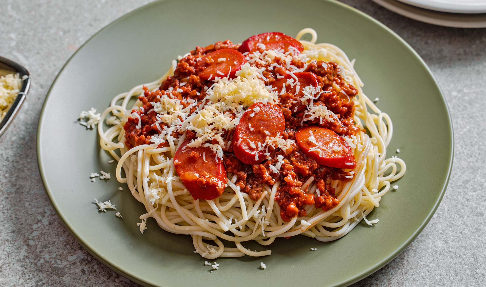

HOME
Filipino Style Spaghetti

Filipino spaghetti is a Filipino adaptation of Italian spaghetti with Bolognese sauce. It has a distinctively sweet sauce, usually made from tomato sauce sweetened with brown sugar or banana ketchup. It is typically topped with sliced hot dogs or smoked longganisa sausages, giniling (ground meat), and grated cheese. It is regarded as a comfort food in Philippine cuisine. It is typically served on almost any special occasion, especially on children's birthdays.
The dish is believed to date back to the period between the 1940s and the 1960s. During the American Commonwealth Period, a shortage of tomato supplies in the Second World War forced the local development of banana ketchup. Spaghetti with Bolognese sauce was introduced by the Americans and was tweaked to suit the local Filipino predilection for sweet dishes.
Ingredients
- 2 lbs. Spaghetti noodles
- 1 lb. ground pork
- 6 ounces luncheon meat minced
- 4 pieces hotdogs or beef franks
- 35 ounces Filipino Style Spaghetti Sauce
- 1/2 cup shredded cheddar cheese
- 1 1/2 cups beef broth
- 1 medium onion minced
- 1 teaspoon minced garlic
- Salt and pepper to taste
- 3 tablespoons cooking oil
Steps
- Cook the Spaghetti noodles according to package instructions. Once cooked, transfer to a bowl. Set aside.
- Heat the oil in a Pan.
- Saute the onion and garlic.
- Once the onions becomes soft, add the ground pork. Cook until the color turns light brown.
- Add the luncheon meat and hotdog. Stir and cook for 2 to 3 minutes.
- Pour-in the Spaghetti sauce and beef broth. Stir and let boil. Cover and simmer for 30 minutes.
- Try to taste the sauce and add salt and pepper if needed.
- Pour the Filipino Style Spaghetti sauce over the Spaghetti. Top with shredded cheese.
- Serve. Share and enjoy!
Similar recipes that you might like: